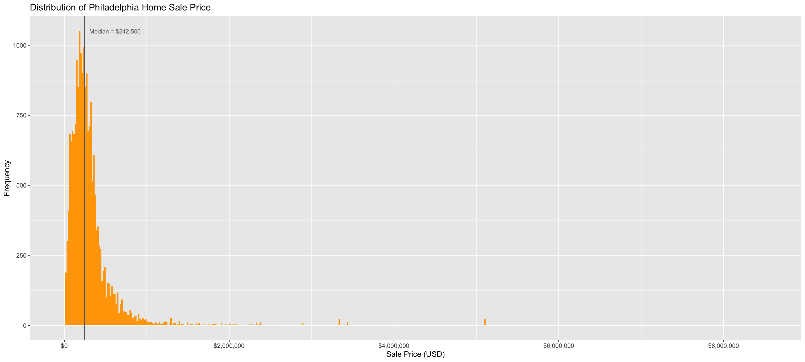
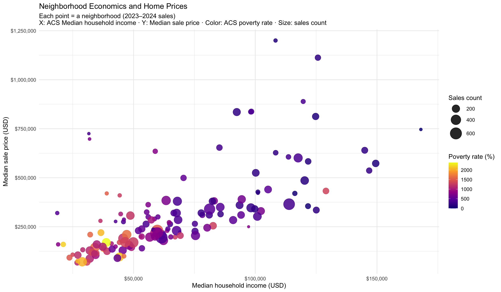
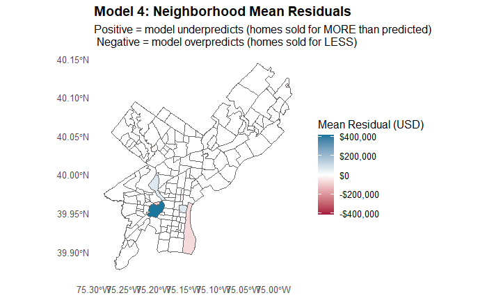

Philadelphia Housing Price Prediction
Improving Property Tax Assessments
GREATER ASIA Consulting Group (AlAbbas, Anaqami, Cen, Chew, Yang)
2025-10-27
Research Question
How accurately can we predict 2023–2024 residential sale prices in Philadelphia using property characteristics and neighborhood/contextual features, in order to improve the city’s automated property tax assessment model?
Why This Matters
- More accurate assessments -> fairer taxes and fewer disputes.
- Neighborhood and spatial insights capture real market dynamics beyond building features.
- Transparent and data-driven modeling builds trust and accountability in city governance.
Data Overview
Our Data Foundation
Philadelphia Property Sales (2023–2024)
Over 17,200 residential transactions citywide capturing sale price, location, and property structural details.
Neighborhood & Contextual Data
Combined city (OpenDataPhilly) and census (ACS 2023) information on:
- Demographics: race, household income, employment, education
- Public safety: proximity to violent and petty crime
- Accessibility: transit stops, bike lanes
- Amenities & services: parks, schools, hospitals, fire department, food retail
What Do Home Prices Look Like?
Histogram of Sale Prices
Key Findings
- Most homes sell for under $400,000.
- A small number of luxury properties push up the high end.
- Reflects strong housing inequality across neighborhoods.
Where Are Expensive Homes?
Key Findings:
- Center City and Northwest Philadelphia are highest-value clusters.
- River Wards and University City show emerging appreciation.
- North Philadelphia shows predominantly lower-priced housing.
Neighborhood & Home Prices?
Bubble Map of Sale Prices vs. Household Income by Neighborhood
Key Findings:
- Neighborhood wealth remains a dominant factor in home values.
- Low-income, high-poverty neighborhoods continue to see limited appreciation.
What Drives the Improvement?
- From taking into accounts only the structural/building quality variables in our first model;
- Adding Spatial Data accounts for proximity to parks, public schools, food retail, and violent crime.
- Adding Census & Socioeconomic Context captures income, education, and housing quality.
- Adding Neighborhood Fixed Effects controls for unobserved local traits.
- Grouping Small Neighborhoods stabilizes estimates where data are sparse (sales<10).
- Including Market Value Benchmarks aligns predictions with broader price trends.
Takeaway:
Philadelphia’s housing market is highly localized — accuracy improves most when models reflect neighborhood structure and market context. The Hyper model which optimized by groups small neighborhoods, is more parsimonious while maintaining high predictive performance.
Best Models
| Model 3: Fixed Effects |
$93,038 |
0.85 |
| Model 4: Hyper Model |
$64,974 |
0.92 |
Both models capture structural, spatial, census, and socioeconomic factors,
while incorporating neighborhood effects to reflect local market variation.
Key Insight:
Adding small-neighborhood grouping and market value signals delivers a major leap in accuracy — boosting R² from 0.85 → 0.93. By going down to the block level, our model captures fine-grained local variation, showing that neighborhood and market context are essential for fair property assessments.
Key Findings
Top Predictors
- Neighborhoods (Prestige/unobserved characteristics)
- Market Value
Interesting Effects
- Higher % Black in the tract is associated with lower sale prices, holding all else constant.
- Higher % age 65+ (more seniors) is associated with higher sale prices.
- Violent incidents within ~600 feet of the home are associated with lower sale prices.
Hardest To Predict
Visualization of Residual by Neighborhood
- Residuals are calculated as actual price minus predicted price.
- Downtown neighborhoods tend to have under predicted values, while suburban areas show over predicted values
Policy Recommendations
Key Actions
- Lending and rehab programs should include an equity adjustment so borrowers in historically underpriced Black areas can actually access capital.
- Keep long-term older homeowners in place with repair help and tax relief, because neighborhood stability itself raises surrounding home values.
- Never deploy pricing algorithms like this for taxes or loan caps without a bias check; the model should be used to monitor inequity, not lock it in.
- Fund repairs and upgrades for small owners in undervalued areas — not just in already-rich areas — so families who maintain their homes can actually build wealth.
- Use models like this as a bias check — not to set taxes or loan limits directly, but to detect where the market may be undervaluing certain neighborhoods so policy can respond.
Limitations & Next Steps
Limitations
- Data coverage: After cleaning, the dataset dropped from ~24K to ~17K sales; if removals weren’t random, the model may overrepresent “normal” transactions and underrepresent edge cases.
- Lagged timing: A single nearby incident doesn’t instantly cut value; what matters is a sustained history of violence that shapes how buyers perceive safety and status on that block.
- Interior detail: We can’t actually see renovation quality (finishes, systems, upgrades), so the “interior condition” label is coarse — and assessed market value is likely soaking up a lot of that missing nuance.
Next Steps
- Incorporate Spatial Models: Explore spatial regression and spatial lag models to better capture location-based dependencies and spatial effects on housing prices.
- Field Validation & Data Enrichment: Conduct field surveys and integrate cross-validated dataset to assess model and ensure predictions accurately reflect real market conditions.